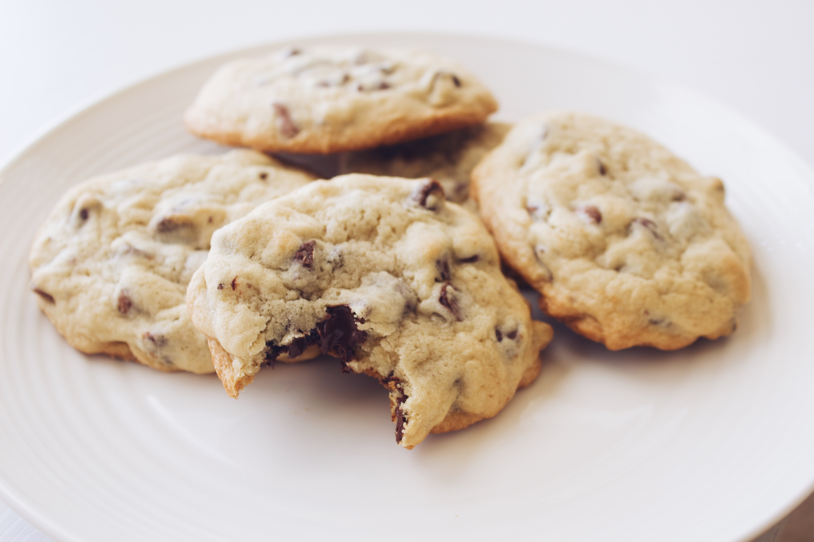

Chocolate Chip Cookies

Namaste Flour Chocolate Chip Cookies
A great dessert anytime you need a bit of chocolate and cookie toogether.
It might be an oldie, but it is always a nice dessert staple.
Ingredients
- 2 1/2 cups Namaste Perfect Flour Blend or Namaste Organic Perfect Flour Blend
- 1 tsp. baking soda
- 1 tsp. salt
- 1 cup butter, softened (2 sticks)
- 3/4 cup sugar
- 3/4 cup packed brown sugar
- 1 tsp. vanilla extract
- 2 eggs
- 2 cups gluten free chocolate chips (12 oz. pkg.)
- Preheat oven to 375° F.
- Combine flour, baking soda and salt in small bowl.
- Beat butter, sugars and vanilla in large bowl until creamy.
- Add eggs, one at a time, beating well after each addition.
- Gradually beat in flour mixture.
- Stir in chocolate chips.
- Drop by small rounded teaspoon onto ungreased cookie sheets. Bake for 9-11 minutes or until golden brown.
- Cool for 2 minutes then remove to wire racks to cool completely.
Back to home